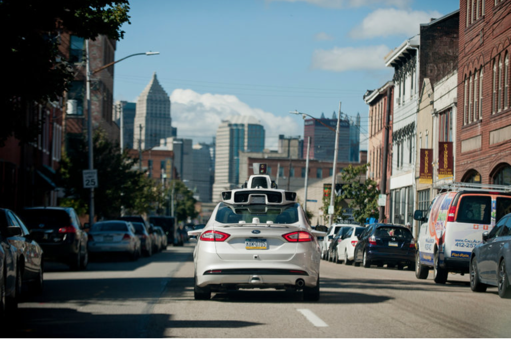

Get a Clue
The Daily Examiner
Thursday, March 2, 2017| Sunny H: 60 L: 39 | Grid Layout: The Denver Post | 75 cents | price may vary outside metro Denver
Oscar Statues Made Using 3D Printing
With the Oscars coming uup, The Academy
teamed up with company, Polish Tallix,
to create the 2016 Oscar
statues
inspired by the 1920 design. The use of
the 3D printing status allowed for a new type
of craftsmanship; a piece of art on its own
separate from the original 1920's design.
In order to create the original Oscar with
a modern twist, Polish Tallix scanned both
the new Oscar with the original one using a
7-axis laser scanning arm. They then
blended
the two scans, and finally used a 3D Systems
MultiJet Printer; creating a new statue
made of
rubber mold. It is then coated with wax in
1600 degree heat.
After the wax melts off, it leaves a ceramic shell to be filled with liquid bronze which is also heated at 1800 degree heat. After this, the status is cooled down and broken out of its ceramic mold; leaving a mirror finish. Each statue has a 24-karat gold finish; applied with electroplating. What is left is a award given to the most prestine in the movies. Click here to learn more.
EXTRAS >>
To view the empty grid layout of this page: click here.
To view the original image newspaper this was recreated from: click here .
Artificial Intelligence Can Benefit E-Commerce
Artificial Intelligence benefits e-commerce as
it allows for a personalized user experience. AI can analyze mounts of data into one
person's interest; efficient for the user's e-commerce process. This includes keeping track
of credit cards, past and future purchases, common threads, etc. Artificial intelligence allows
for the customer's experience to be unique by keeping tracking of data for
each customer; gaging who buys what products and pitch accordingly.
North Face, a company
that uses A.I., allows the user when and were they would a jacket-a particular product
North Face sells-filtering out particular products that are appropriate for the situation.Artificial intelligence
is changing the way stores and companies approach their customer,and how useful the experience
is to the customer. To the full article
click here.
Google Accuses Uber of Stealing Technology?
Google's self-driving car company, Waymo, is accusing former employee, Anthony Levandowski, of stealing 14,000 files before departing the company to starting his own driving company, Otto; acquired by Uber seven months later. Waymo further stated that the two companies bear a resemblance in user experience, high tech design. Among the files, Levandowski is also being accused of stealing manufacturing and technical information.
For Uber, Otto represents the future of transportation. While naming Levandowski the
vice president of Uber's self-driving technology, Uber said that it will take years before
a self-driving car can be fully functional; thus the early tests taking place in Pittsburgh
and Arizona.
Uber and Google aren't the only companies competing to make it big in the self-driving
technology. Companies across the Silicon Valley have a spawned interest; intensifying
expensive investments and lawsuits.
Telsa filed a lawsuit against Sterling Anderson, director of the company's Autopilot
program, because he accuesly broke the employement agreement by trying to recruit
Telsa's employee into his new up and coming self-driving company.
Otto has to to respond to claims against them from Waymo and Google. To view the full article
click here.
Reason Behind Amazon's Cloud Computing Outage
On Tuesday, Amazon released a apology after a high-profile
malfunction caused websites across on the Internet to halt for hours. It's reasoning they claimed?
A employee error. An employee was working to try to speed up the billing system, when they tap
on the wrong codes; causing many servers offline that what was meant to.
The failure meant that Amazon couldn't store information on their cloud computing platform; meaning
that users couldn't load pages, transfer files, or maintain regular use. Amazon
also runs cloud computing for other sites such as Airbnb, Netflix, Reddit and Quora.
Because of the outage, Amazon further stated that employees will no longer be able to unplug
whole parts of the Internet by mistake, as well as subdivide the servers to reduce the
blast radius and improve recovery. To learn more,
click here for the full article.
Brain-Computer Interface Allows for Speediest Typing Yet
Many are hopeful that brain-computing interface (BCI) can
be used to restore functions for people with
disabilities.
The study is to test three participants- with ALS or Lou
Gehrig's disease- typing skills; hoping
with BCI they can
reach the speediest typing yet using BCI's. The research was
measured using various tasks:
some that included "free-typing"
-typing as they were asked questions- while another tasks
was selecting
squares on a 6x6 grid as they lit up randomly.
With these tasks, two ALS patients achieved 2.2 and 1.4 bits
per second, respectively; double the previous record. The
third patient achieved 3.7 bits per second;
four times
the amount of the previous record.
These numbers are the highest performed by anyone with a BCI device. During these studies, the participants had either one or two electrode arrays implanted on the surface of their brain; containing microelectrodes that control the motor cortex for arm movements. Even with the accomplishments, the biggest drawbacks is having wire from people heads; making is cumbersome and carrying risks. One of the researchers on the project said with BCI, "the technology is basically there"; while another said that research until a BCI device can allow a participant to a year's worth of standard computer interface only using brain signals. To view the full article click here.